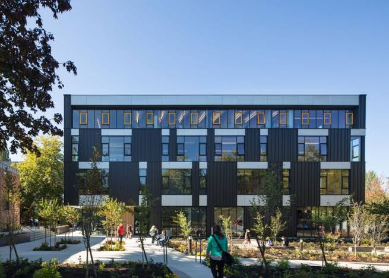

What is the first step to taking care of our Environment
1. Throw away your trash in the right bins. Compost, Recycle, and Landfill all mean different things. 2. DO NOT LITTER, LITTERING IS A PUNISHABLE ACT

1. Throw away your trash in the right bins. Compost, Recycle, and Landfill all mean different things. 2. DO NOT LITTER, LITTERING IS A PUNISHABLE ACT
Turn off any lights that arent being used. Unplug computer chargers and other devices to not waste energy.
Try to use solar powered energy or environment friendly generated power.
DITCH THE PLASTIC. Try to use reusables. Swap out plastic water bottles, coffee cups, and plastic bags, for reusable alternatives.